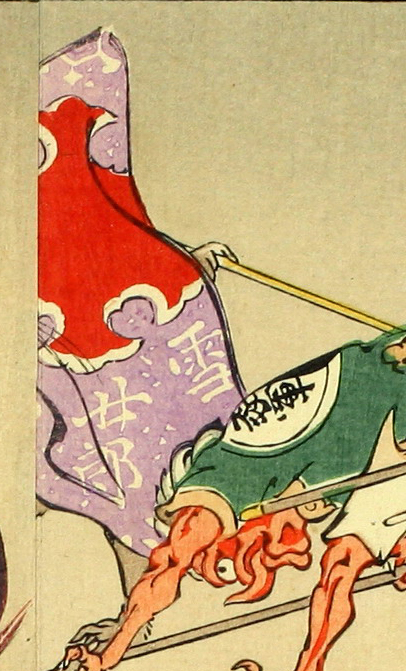

大きな布に隠れた化物。紫色の布には、「雪」「女郎」などの文字が書かれている。手足は茶色く、足には獣のような毛が生えている。黄色い棒状のものを掴んでいる。
著作者：洒落斎芳幾（歌川芳幾）／出典：親書誌：U426_nichibunken_0075：滑稽倭日史記；コッケイヤマトシキ／日付：2007／資源識別子：U426_nichibunken_0075_0001_0003
Copyright (c)2010- International Research Center for Japanese Studies, Kyoto, Japan. All rights reserved.